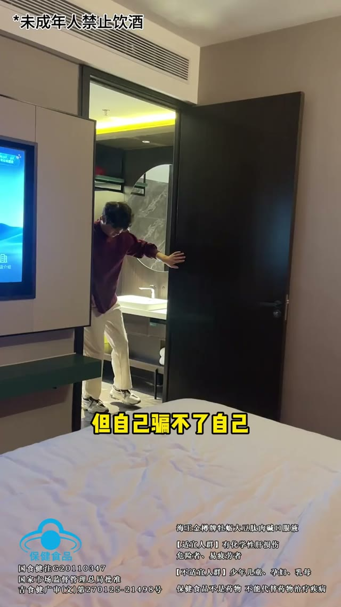
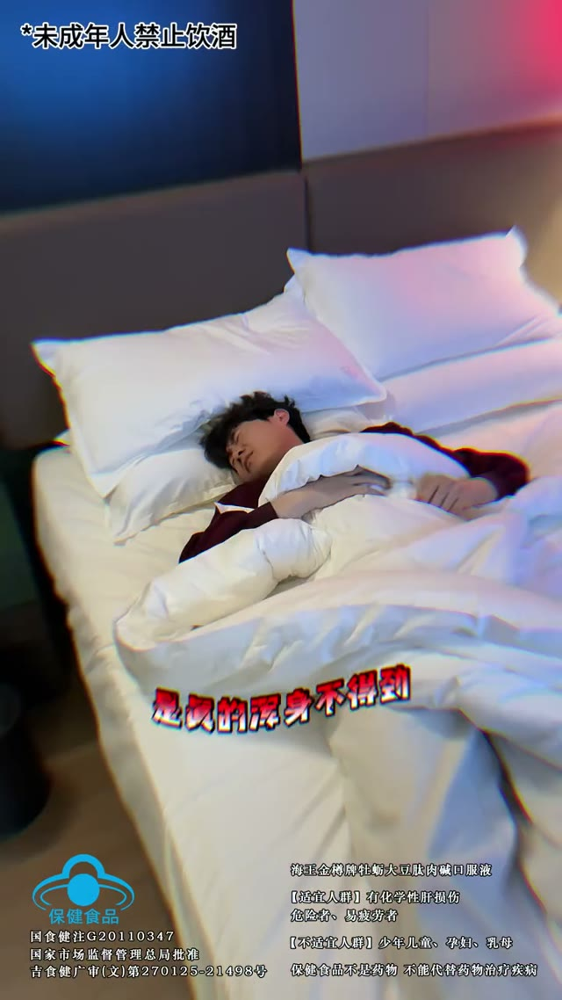
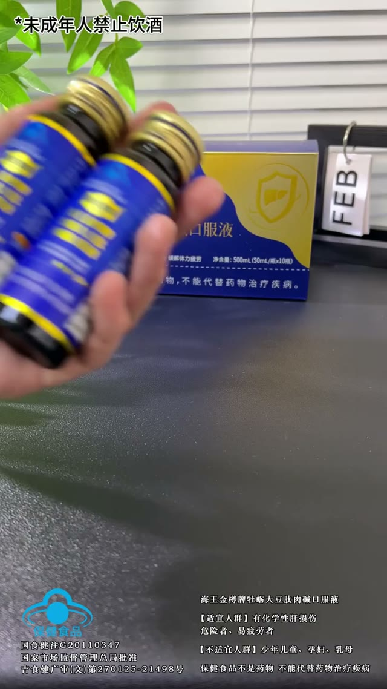
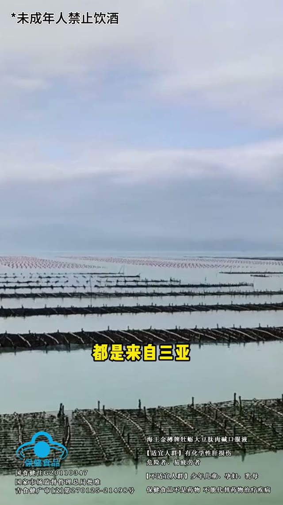
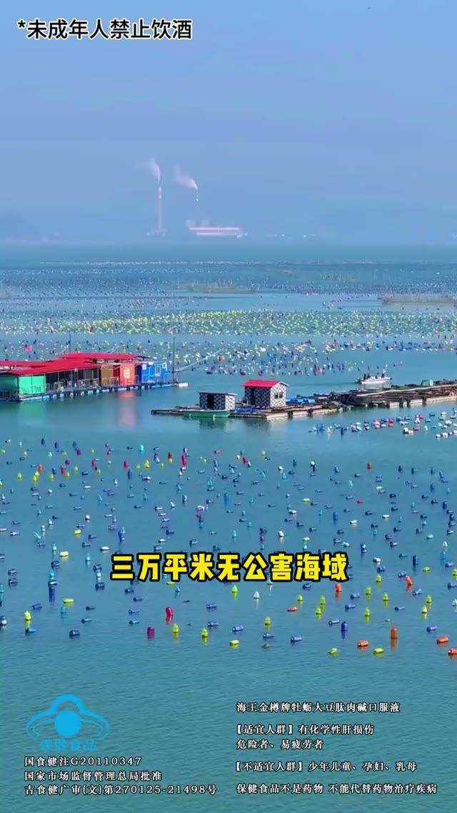
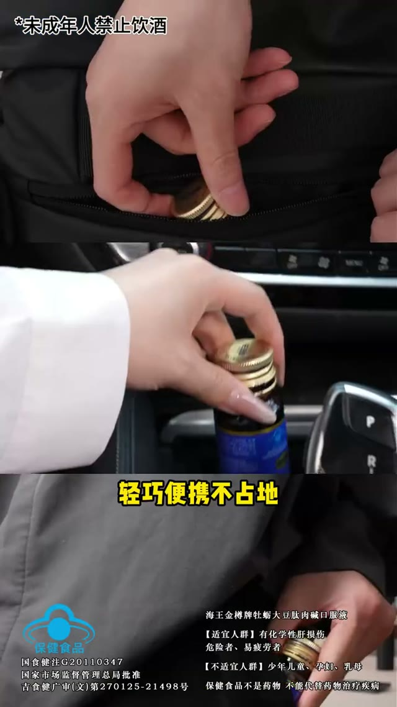

1. 引入期（0-5s）
0.0s
有些事不想承认

1.6s
但自己骗不了自己
3.1s
是真的浑身不得劲儿

4.7s
那就是海王金樽液

2. 产品展示期（5-13s）
6.3s
三十多年的老国货

7.9s
不是随便哪个品牌就能比的

9.4s
牡蛎精华和小分子多肽

11.0s
都是来自三亚

12.6s
三万平米无公害海域

3. 情感共鸣期（13-18s）
14.1s
辅助保护化学性肝损伤

15.7s
辅助保护化学性肝损伤

17.3s
轻巧便携不占地

4. 解决方案 + CTA（18-22s）
18.9s
入口清凉甘甜

20.4s
没有牡蛎的腥味